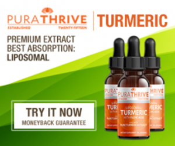

Super Food That Heals a Multitude of Illnesses - Comes With a Deadly Risk
A relative of ginger, with a distinct yellow-orange color; turmeric’s medicinal powers have been praised for thousands of years. With scientific research confirming 5143 different medicinal purposes for turmeric, its popularity has surged in Western countries.
Turmeric contains more than 300 nutrients including: Vitamin C, Vitamin B6, niacin, beta-carotene, calcium, flavonoids, fiber, iron, zinc, magnesium, potassium, antioxidants and other essential trace minerals. But the compound in turmeric linked to many health benefits are curcuminoids – particularly curcumin.
But consumers need to first be aware of the risks of brain damage (especially for children) that can come from excess consumption of this super food.
But before warning of its dangers, and how to protect yourself; lets first run through some of the ailments turmeric has been proven to treat.
Weight loss – Turmeric has been proven to help heal insulin resistance; which is a primary cause of weight gain (and leads to metabolic syndrome). It also successfully reduces hyperglycemia, hyperlipidemia, and other symptoms linked to obesity. https://www.ncbi.nlm.nih.gov/pmc/articles/PMC3144156/?tool=pubmed
Treats and prevents type-2 diabetes – Because turmeric helps to heal insulin resistance, it is an excellent means for preventing type-2 diabetes. Evidence-based complementary and alternative medicine confirms that it can be helpful in treating type-2 diabetes as well as keeping associated disorders under control. https://www.ncbi.nlm.nih.gov/pmc/articles/PMC3857752/
A potent anti-oxidant – Turmeric has strong anti-oxidant properties. The compounds in turmeric reduce oxidative stress, increase anti-oxidant enzymes and scavenge free radicals that cause oxidation. https://www.ncbi.nlm.nih.gov/pubmed/17569207
Anti-bacterial – Several studies from Namik Kemal University, Turkey revealed that turmeric has strong antibacterial effects against high concentrations of common bacterial strains. https://www.ncbi.nlm.nih.gov/pubmed/24097361
Anti-inflammatory – A study by the University of California, concluded that turmeric has strong anti-inflammatory effects – demonstrated in six different human trials. https://www.ncbi.nlm.nih.gov/pubmed/12676044
Arthritis relief – Because of turmerics anti-inflammatory properties, the Arthritis foundation conducted research and found that turmeric to be an effective means for reducing pain and joint inflammation. Interestingly, the study revealed that turmeric yielded better results than ‘diclofenac’; a drug commonly prescribed for arthritis. https://www.ncbi.nlm.nih.gov/pubmed/27533649
Treats Alzheimer’s disease – The process through which Alzheimer’s disease degrades the nerve cells is through inflammation, oxidative damage and most notably; the formation of beta-amyloid plaque, and metal toxicity. There have been several studies that prove turmeric to be an effective treatment for these symptoms. https://www.ncbi.nlm.nih.gov/pmc/articles/PMC2781139/
The study also found that turmeric improves greater brain function for older people suffering from mild age-related memory issues.
Fatty liver disease – A common disease that affects 4 out of 10 Americans, is where fat deposits in the liver prevents the liver from doing its job properly. Toxins build-up and cause a host of health problems for the rest of the body. Turmeric is proven to help detoxify the liver so it can begin to repair itself. https://www.ncbi.nlm.nih.gov/pubmed/30949432
Natural Painkiller – A study from Mahidol University, Bangkok, Thailand revealed that turmeric is just as effective for pain relief as ibuprofen. https://www.ncbi.nlm.nih.gov/pubmed/19678780
Parkinson’s disease – Several studies have revealed that the neuroprotective capabilities of turmeric can pass through the blood-brain barrier where it can treat Parkinson’s at its root cause. https://www.ncbi.nlm.nih.gov/pubmed/22211691
Psoriasis relief – Research has found turmeric’s ability to alter TNF cytokine expression, which can help in minimizing psoriasis and psoriatic arthritis flares. https://www.psoriasis.org/treating-psoriasis/complementary-and-alternative/herbal-remedies
PMS treatment – Research revealed positive results of turmeric in reducing the severity of PMS symptoms. https://www.ncbi.nlm.nih.gov/pubmed/26051565
Lowers high blood pressure – Turmeric is a natural blood thinner, lowers bad LDL cholesterol and dilates the arteries. https://www.ncbi.nlm.nih.gov/pmc/articles/PMC4857140/
Depression treatment – One study shows evidence for turmeric having antidepressant properties. These findings prove to be a useful and potent natural antidepressant approach in the management of depression. https://www.ncbi.nlm.nih.gov/pubmed/18766332
Acne application – Use turmeric for a natural face mask to combat acne and heal acne scars. Ten studies noted statistically significant improvement in acne severity in the turmeric/curcumin treatment groups compared with control groups. https://www.ncbi.nlm.nih.gov/pubmed/27213821
Gout relief – A buildup of uric acid that crystallizes within the joints is what causes severe pain. Turmeric has been proven to lower uric acid levels. https://www.ncbi.nlm.nih.gov/pubmed/27124606
Anti-tumor agent – Curcumin (found in turmeric) is both non-toxic as well as diversified in its inhibitory effects on a multitude of pathways involved in carcinogenesis and tumor formation. https://www.ncbi.nlm.nih.gov/pmc/articles/PMC3055228/
Fights cancer – Over 1900 different research papers have been published confirming that turmeric and curcumin (found in turmeric) fight and treat different kinds of cancers. https://www.ncbi.nlm.nih.gov/pubmed/?term=turmeric+cancer
Scientific research is slowly recognizing the benefits of this miracle herb. With hundreds more ailments that this super food is touted to heal.
Dosage and warning
With turmeric having such a long list of health benefits, one would be tempted to take a double dose on a daily basis. But too much of a good thing can cause harm. Consuming too much turmeric can lead to stomach upsets, stomach ulcers… or even worse (see poison warning below).
If taking turmeric supplements, never exceed the recommended dosage on the back of the bottle.
If consuming turmeric powder, it is safe to consume 2-4 grams daily.
If eating raw, it is safe to eat 3-4 grams daily. Because root vegetables absorb toxins from soil, it is recommended that you buy organic.
It is very important to purchase your turmeric from reputable sources. Make sure your turmeric is 100% pure from any contaminants.
Neurotixin poisoning threat
A new Stanford University study has found that some turmeric processors in Bangladesh (which is the worlds leading turmeric exporter) have been adulterating their product with an industrial lead chromate to give the spice a bright golden color, which is what turmeric is known for.
In times of flooding, where crops have been spoiled, leaving the product dull-colored; turmeric growers have been known to add the lead pigment to restore its appearance.
Lead is a powerful neurotoxin. At high levels of exposure, lead attacks the brain and central nervous system; causing lowered IQ, convulsions, coma and even death.
The body distributes lead to the liver, kidneys, brain and bones. It is stored in the teeth and bones, where it accumulates over time.
Lead in the bones of expectant mothers is released into blood and exposes the developing fetus – causing development issues.
Symptoms only appear when exposure is already at a critical level.
These is no safe level of lead exposure, so if you have been taking turmeric from a questionable source, you may want to takes some measures to detoxify yourself.
Natural lead-detoxifier better than prescription drug
Studies from Mashhad University of Medical Sciences, Mashhad, Iran, reveals that garlic is as effective and safer than a common chelation drug known as d-penicillamine at pulling this metal out of the body. https://www.greenmedinfo.com/article/garlic-seems-safer-clinically-and-effective-d-penicillamine-removing-lead-body
But make sure you consume garlic raw, as cooking it removes its detoxifying properties.
Not all forms of turmeric are created equal…
Turmeric powder has a fairly low bio-availability (meaning that a good portion of it isn’t properly absorbed by your body).
If you are taking raw turmeric, it is important to combine it with black pepper – as black pepper contains piperine, which enhances turmerics bio-availability.
Avoid the Dreaded “Expensive Pee” Syndrome
Most of the turmeric supplements you see in stores come in the form of encapsulated powders. The truth is with turmeric powder you may be getting very little actual benefit.
It often isn’t very fresh, and it’s sometimes made with harsh processes that can destroy or degrade turmeric’s healthful components.
Because turmeric is hard to absorb, it must be formulated in a certain way allowing the body to absorb and utilize its entire spectrum of nutrients.
There’s another NEW form of turmeric that actually tastes amazing AND is easy to absorb…
==>Click here: PuraTHRIVE Organic Turmeric Extract is an outstanding full-spectrum extract that’s “liposomalized”—meaning it’s specifically blended to make the turmeric bind to phosphlipids (fats) that increase its bioavailability 185 times more than turmeric in its natural form.
This formulation takes all that raw turmeric has to offer and presents it in a format that your body LOVES to consume.
The root of all disease
Doctors and health experts universally agree that chronic inflammation is ‘the root of all disease’.
Because turmeric is such a potent natural anti-inflammatory, PuraTHRIVE Organic Turmeric Extract is the only nutritional supplement that I take. I know that I can trust that the product is pure, organic and is the only way to take turmeric with such effective absorption.
It comes with a ‘no questions asked 180 day money back guarantee’ – which means you have ages to try it out.
